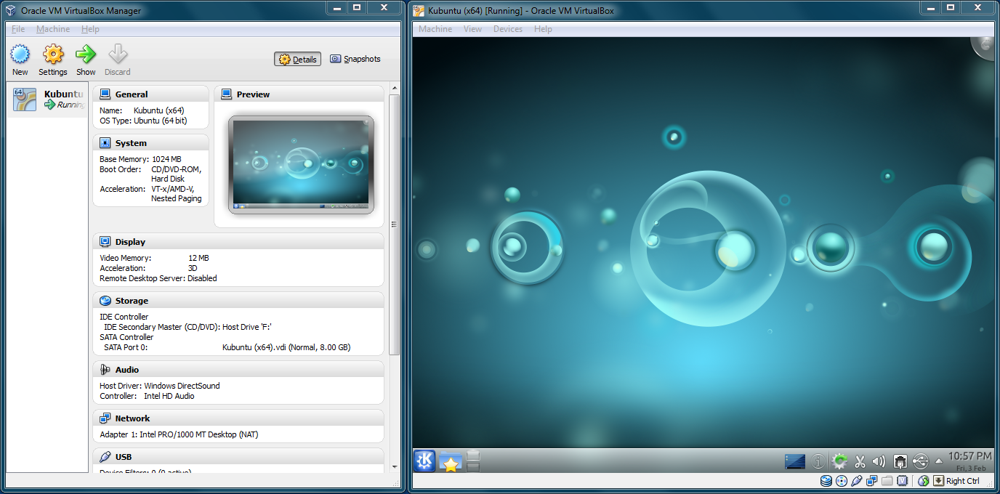
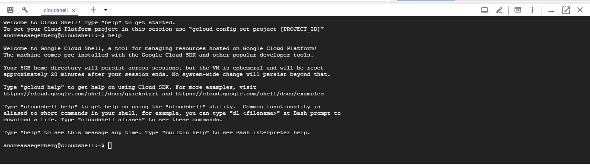
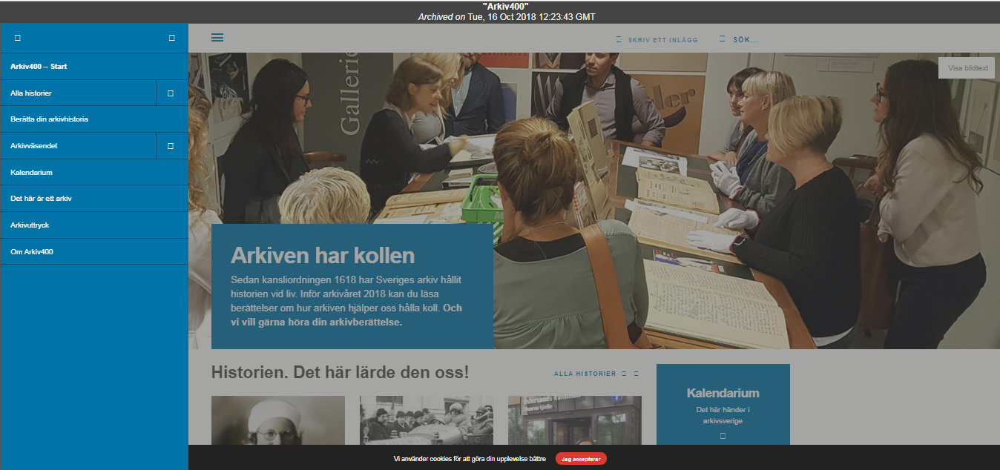
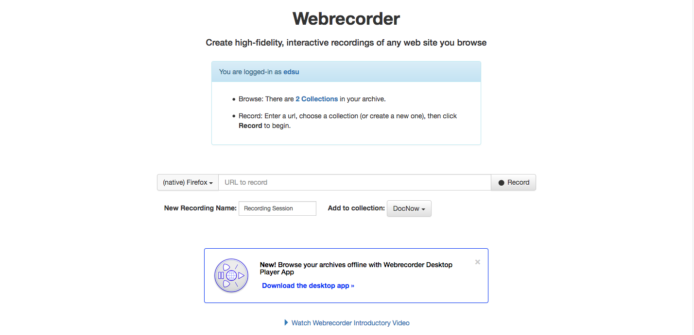

Webbarkivering i praktiken
Andreas Segerberg
regionarkivet.se
andreas.segerberg@arkivnamnden.goteborg.se
Presentationen: #
Agenda
- Webbsidor och sociala medier som records och digitala objekt
- Hårdvara
- Insamling
- Arkivformat
- Mjukvara
- Installation
- Konfiguration
- Åtkomst
- Mjukvara
- Installation
- Konfiguration
- Mjukvara
Webben - vad är det?
- Klient - Server | Meddelande + Nyttolast
- HTML, Javascript, CSS, Bilder, Multimedia och mycket mer....
HTTP(S)

- 200 OK
- 301 Moved Permanently
- 404 Not Found
- 500 Internal Server Error
Social media som ett record

1. Walker, Shawn. (2018). THE EPHEMERALITY OF SOCIAL MEDIA, THE ETHICS OF SOCIAL MEDIA CHANGE
Hårdvara

Virtuella Maskiner

Maskiner i 1
Insamling
| Verktyg | Tillämpning | Resurser |
|---|---|---|
| Wget | ||
| Heritrix | ||
| Pywb | ||
| Webrecorder | ||
| Brozzler | ||
| Squidwarc | ||
| Warcworker | ||
| Twarc | ||
| Social Feed Manager | ||
| Kurbits | ||
| HTTrack | ||
| WarCreate |
Arkivformat

WARC

WGET (Enstaka sidor)
WGET (Hel Domän)
WGET Resultat
fai.nu |
Heritrix Installation och start

Heritrix resultat
 |
arkiv400.se  |
Pywb installation och start
Webrecorder
Squidwarc Installation
Squidwarc Konfiguration
Warcworker
Åtkomst
| Verktyg | Resurser |
|---|---|
| Open Wayback | |
| Pywb | |
| Webrecorder player |